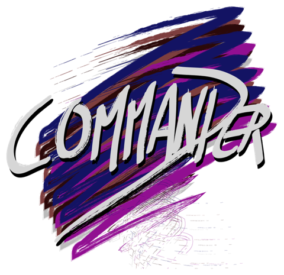

COMMANDER 설치 안내
체스판 자동 전투 · 2인 실시간 대전
브라우저로 바로 하기 가장 쉬움
설치할 것이 없어요. PC, 맥, 아이패드, 안드로이드 모두 됩니다.
- Chrome, Safari, Edge 같은 최신 브라우저에서 아래 주소를 엽니다.
- GL 계정으로 로그인하거나, 이름만 적고 시작해요. (게스트 방은 학번과 이름으로 들어가요)
https://edgame-api.officialgl.com폰·태블릿에서는 브라우저의 홈 화면에 추가를 쓰면 앱처럼 아이콘에서 바로 열 수 있어요. (Safari: 공유 → 홈 화면에 추가, Chrome: ⋮ → 홈 화면에 추가) 게임은 가로 화면에서 가장 잘 보여요.
iPad · iPhone 앱 iPadOS·iOS 17 이상
앱 스토어 앱이 아니라서 내 Apple ID로 서명해서 설치해요. 방법은 두 가지예요.
A. SideStore 추천
기기에서 바로 업데이트하고 다시 서명할 수 있어요.
- SideStore를 설치해요. 처음 한 번은 컴퓨터가 필요해요. SideStore 설치 안내
- 이 기기에서 아래 버튼을 눌러 COMMANDER 소스를 추가해요.
- SideStore의 소스 목록에서 COMMANDER를 눌러 설치해요.
- 개발자 모드를 켜요: 설정 → 개인정보 보호 및 보안 → 개발자 모드 → 켜기 (기기가 다시 켜져요)
B. 컴퓨터로 (Sideloadly)
SideStore를 쓰지 않을 때.
- 위의 .ipa 받기로
Commander.ipa를 컴퓨터에 받아요. - Sideloadly를 설치하고 iPad를 케이블로 연결해요.
- ipa 파일을 끌어다 놓고, 내 Apple ID를 적고 Start.
- iPad에서 설정 → 일반 → VPN 및 기기 관리 → 내 Apple ID → 신뢰.
- 개발자 모드를 켜요 (A의 4번과 같아요).
무료 Apple ID로 서명한 앱은 7일마다 다시 서명해야 열려요. SideStore는 앱 안에서 Refresh, Sideloadly는 같은 방법으로 한 번 더 설치하면 돼요. 전적은 서버에 있어서 다시 설치해도 그대로예요.
처음 열면
- 서버 주소는 공식 서버가 기본이에요. 로그인하기를 누르면 브라우저가 열려요. 로그인하고 로그인 확인을 누른 뒤 앱으로 돌아오면 돼요.
- 친구가 연 로컬 서버는 서버 화면의 QR을 카메라로 찍거나, 같은 와이파이면 서버 입력칸 아래 목록에서 골라요.
안드로이드 준비 중
안드로이드 앱(8.0 이상)은 준비 중이에요. 그 전까지는 Chrome에서 브라우저로 하고, 홈 화면에 추가해 두면 편해요.
내 서버 열기 선택
인터넷이 없거나 우리끼리만 할 때, PC 한 대를 서버로 켜고 같은 와이파이에서 접속해요. 전적은 그 PC에 남아요.
실행파일은 아직 공개 다운로드가 없어요. 운영하는 사람에게 받아 주세요.
윈도우
commander-server.exe를 원하는 폴더에 두고 실행해요. 데이터는 옆의commander-data폴더에 쌓여요.- "Windows의 PC 보호" 창이 뜨면 추가 정보 → 실행.
- 방화벽이 물으면 허용 (폰이 서버를 찾으려면 필요해요).
맥
- 터미널에서 처음 한 번 잠금을 풀어요:
xattr -d com.apple.quarantine ./commander-server-macos ./commander-server-macos로 실행해요.
우분투
sudo apt install ./commander-server_*.deb- 앱 메뉴의 COMMANDER 서버를 눌러요. 접속 화면(QR)이 열려요.
접속하기
- 서버를 켜면 화면에
http://IP주소:8787과 QR이 나와요. 같은 화면은 서버 PC의http://localhost:8787/connect에도 있어요. - 브라우저: 그 주소를 그대로 열어요. 앱: QR을 찍거나 같은 와이파이 목록에서 골라요.
- 로컬 서버는 로그인 없이 이름만 써요. 이름이 같으면 같은 사람으로 전적이 이어져요.
문제가 있을 때
앱을 열면 바로 꺼져요
무료 Apple ID 서명이 7일이 지나 만료됐어요. SideStore에서 Refresh 하거나 Sideloadly로 다시 설치하세요. 개발자 모드가 꺼져 있어도 열리지 않아요.
"신뢰하지 않는 개발자"라고 나와요
설정 → 일반 → VPN 및 기기 관리에서 내 Apple ID를 신뢰로 바꿔 주세요.
SideStore에 소스가 추가되지 않아요
"주소 복사"로 주소를 복사한 뒤 SideStore의 소스 탭 → ＋ 에 직접 붙여 넣어 보세요.
같은 와이파이인데 서버가 목록에 안 보여요
- 폰과 서버 PC가 정말 같은 와이파이인지 확인해요. (게스트 와이파이는 기기끼리 막혀 있기도 해요)
- 서버 PC의 방화벽에서 8787(TCP)과 5353(UDP)을 열어요. 목록에 없어도 주소를 직접 적거나 QR을 찍으면 돼요.
- iPad 앱은 처음에 로컬 네트워크 권한을 물어요. 거절했다면 설정 → COMMANDER에서 켜 주세요.
화면이 깨져 보여요
브라우저를 최신으로 업데이트해 주세요. 아주 오래된 브라우저에서는 일부 색과 배치가 맞지 않을 수 있어요.